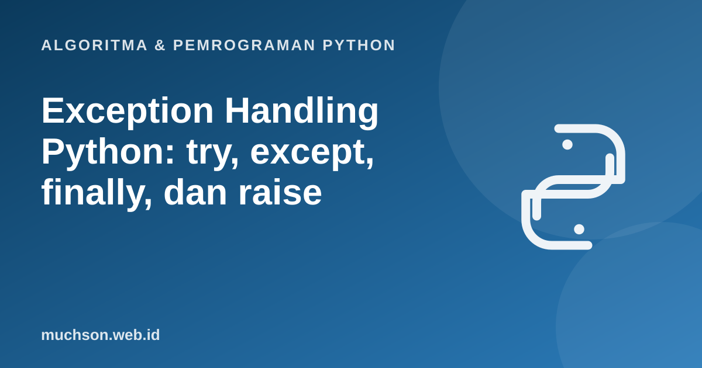

Beranda › Artikel › Algoritma & Pemrograman Python
Algoritma & Pemrograman PythonException Handling Python: try, except, finally, dan raise
Program yang baik tidak hanya benar saat masukannya benar, tetapi juga bersikap wajar saat ada yang salah: berkas tidak ada, pengguna mengetik huruf alih-alih angka, jaringan putus. Python menangani situasi ini dengan exception. Memahaminya berarti Anda bisa membuat program yang tangguh, bukan sekadar yang "jalan di komputer saya".
Sebaiknya sudah paham: fungsi, percabangan

Setelah membaca dan mencoba materi ini, Anda mampu:
- membaca pesan traceback dan mengenali jenis exception umum
- memakai try, except, else, dan finally dengan benar
- melempar exception dengan raise dan membuat exception kustom
- memilih antara memeriksa dulu (LBYL) dan mencoba lalu menangani (EAFP)
- menghindari kebiasaan buruk seperti except kosong
Apa itu exception?
Exception adalah kejadian yang mengganggu alur normal program. Bila tidak ditangani, program berhenti dan Python mencetak traceback: jejak pemanggilan yang berakhir pada jenis dan pesan kesalahan.
def bagi(a, b):
return a / b
print(bagi(10, 2))
print(bagi(1, 0))5.0
ZeroDivisionError: division by zero
| Exception | Penyebab umum | Contoh |
|---|---|---|
| ValueError | Nilai valid secara tipe, tetapi tidak sesuai | int("abc") |
| TypeError | Operasi pada tipe yang salah | "a" + 1 |
| ZeroDivisionError | Pembagian dengan nol | 5 / 0 |
| IndexError | Indeks di luar jangkauan | [1, 2][5] |
| KeyError | Kunci kamus tidak ada | {"a": 1}["b"] |
| FileNotFoundError | Berkas tidak ditemukan | open("tidak_ada.txt") |
| AttributeError | Atribut atau metode tidak ada | (5).append(1) |
try, except, else, finally
def baca_angka(teks):
try:
n = int(teks)
except ValueError:
print(f" '{teks}' bukan bilangan bulat")
return None
else:
print(f" berhasil: {n}")
return n
finally:
print(" (selesai memeriksa)")
for t in ["42", "abc"]:
print(repr(t), "->", baca_angka(t)) berhasil: 42
(selesai memeriksa)
'42' -> 42
'abc' bukan bilangan bulat
(selesai memeriksa)
'abc' -> None
Menangkap exception tertentu, bukan semuanya
def hitung(a, b):
try:
return a / b
except ZeroDivisionError:
return float("inf")
except TypeError as e:
print("Tipe salah:", e)
return None
print(hitung(6, 3), hitung(1, 0), hitung("1", 2))Tipe salah: unsupported operand type(s) for /: 'str' and 'int'
2.0 inf None
Hindari except: kosong atau except Exception: pass. Ia menelan semua kesalahan, termasuk bug yang seharusnya Anda ketahui, sehingga program gagal diam-diam. Tangkap hanya yang bisa Anda tangani, dan catat (log) sisanya.
raise dan exception kustom
class SaldoKurang(Exception):
"""Dilempar bila saldo tidak cukup untuk penarikan."""
def __init__(self, saldo, jumlah):
super().__init__(f"Saldo {saldo} kurang dari {jumlah}")
self.kurang = jumlah - saldo
def tarik(saldo, jumlah):
if jumlah <= 0:
raise ValueError("jumlah harus positif")
if jumlah > saldo:
raise SaldoKurang(saldo, jumlah)
return saldo - jumlah
for j in [30, 500, -5]:
try:
print("sisa:", tarik(100, j))
except SaldoKurang as e:
print("Ditolak:", e, "| kurang", e.kurang)
except ValueError as e:
print("Masukan salah:", e)sisa: 70
Ditolak: Saldo 100 kurang dari 500 | kurang 400
Masukan salah: jumlah harus positif
EAFP dan LBYL
1. Tulis fungsi minta_angka() yang terus bertanya sampai pengguna memasukkan bilangan bulat valid.
def minta_angka():
while True:
try:
return int(input("Angka: "))
except ValueError:
print("Bukan bilangan bulat, coba lagi.")2. Ubah fungsi bagi agar mengembalikan None dan mencetak pesan bila pembagi nol, tanpa memakai if.
try: return a / b
except ZeroDivisionError: print("pembagi nol"); return None3. Apa yang tercetak: try berisi return 1 dan finally berisi print("F")?
- Exception menghentikan program bila tidak ditangani; traceback dibaca dari bawah.
- try/except menangkap kesalahan tertentu, else untuk jalur sukses, finally untuk pembersihan yang selalu berjalan.
- raise melempar exception; buat kelas turunan Exception untuk kesalahan domain.
- Tangkap spesifik, jangan menelan semua error.
Tanya jawab
Kapan memakai assert dan kapan exception?
Apa itu exception chaining?
raise Baru from e, Python menyimpan exception asal sebagai penyebab sehingga traceback menampilkan keduanya.Apakah exception lambat?
Referensi
- Dokumentasi Python: Errors and Exceptions (tutorial)
- Dokumentasi Python: Built-in Exceptions
- Dokumentasi Python: The try statement
- Allen B. Downey, Think Python (edisi ke-3), buku teks terbuka